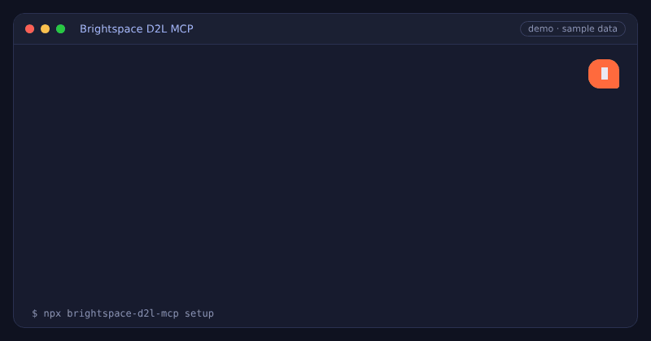

Free for students · Claude, ChatGPT, Cursor, Copilot
Ask your AI what's actually left to do.
Connect D2L Brightspace to your AI app. It checks what you already handed in, so you only see the work that's really left, plus your grades, exam dates and what you need on the final.
- Read-only
- No password stored
- Runs on your computer
- Any Brightspace school
What should I work on right now?
3 things left this week
- Lab 4 reportSubmitted
- Essay draftDue Thu 11:59 PM
- Quiz 6Due Fri
- Project proposalOpens Mon
Skipped 6 assignments you already handed in.
Sample data
How it works
Three steps, about a minute
No accounts, no API keys, nothing to configure by hand.
- 1
Run setup
One click on Windows, or one command on Mac and Linux.
- 2
Sign in to your school
A normal browser window opens. Microsoft, Duo, Okta and Shibboleth all work.
- 3
Ask your AI
Setup connects every AI app it finds. Ask "What's due this week?"
Get started
Set it up
You need Node.js (free, one-time install) and Chrome or Edge. Pick your computer.
- Download the setup file and double-click it.
- If Windows shows "Windows protected your PC", click More info, then Run anyway. The file only runs the setup command below.
- Sign in to Brightspace in the window that opens. Done.
Prefer typing it? Open PowerShell and run:
- Open Terminal: press ⌘ Space, type "Terminal", press Enter.
- Copy this command, paste it in Terminal and press Enter.
- Sign in to Brightspace in the window that opens. Done.
- Open a terminal.
- Copy this command, paste it and press Enter.
- Sign in to Brightspace in the window that opens. Done.
Stuck? Run npx brightspace-d2l-mcp doctor and it tells you what to fix. Guides for Claude and ChatGPT, or the full setup guide.
See it in action
A real conversation, with sample data.

Features
What you can ask
17 read-only tools turn Brightspace into something your AI can actually read.
✅ What's left
"What should I work on right now?"
A to-do list ranked by due date that skips everything you've already submitted.
📅 Deadlines
"What's due this week?"
Every assignment and quiz across all your courses, with its real status.
📝 Exams
"When is my midterm?"
Exams, labs and classes straight from your course calendars.
🎯 Target grade
"What do I need on the final to get an 80?"
Where you stand, your best and worst case, and the average you need.
🔔 What's new
"Catch me up."
New announcements, newly marked work, unread discussions and quizzes you haven't tried.
📚 Course content
"Summarize the Lab 3 instructions."
Reads slides, handouts, rubrics, syllabi and assignment files.
📊 Grades
"Am I passing Calculus?"
Grade breakdowns per course with instructor comments.
🗓️ Calendar
"Put my deadlines in my calendar."
Exports to Google Calendar, Apple Calendar and Outlook.
It knows what you've already handed in
Most tools only see due dates, so they keep telling you to do finished work. This one checks your actual submission for every assignment.
Done. Never suggested as a to-do.
Still needs doing, ranked by due date.
The dropbox hasn't opened, so it tells you when it will.
You can no longer submit.
Works with your AI app
Setup connects most of these automatically. The rest take one copy and paste.

Pricing
Free, or never miss a deadline
Free
$0
- All 17 tools
- Runs on your own computer
- Open source
- Needs Node.js and one setup command
Pro
$4 CAD / month
- Everything in Free
- Deadline alerts 24h and 2h before
- Daily digest and grade alerts
- Auto-updating calendar
How it compares
17 tools, a real to-do list that skips submitted work, a target grade calculator, exam dates and calendar export. Setup connects 13 AI apps automatically.
See the full comparisonFAQ
Does it work at my school?
If your school uses D2L Brightspace, yes. Setup opens a normal browser window so any sign-in works, including Microsoft, Duo, Okta and Shibboleth.
Is my password saved?
No. You type your password into your school's own sign-in page in a real browser. The tool only keeps the session, on your own computer.
Can it submit work or change anything?
No. Every tool is read-only and only ever reads from Brightspace. A test in the code fails if that ever changes.
Where does my data go?
The free version runs on your computer and talks only to your school's Brightspace and your own AI app. No server in between and no analytics. See the privacy policy.
Is the Windows setup file safe?
Yes. It's a short text file that checks for Node.js and runs npx brightspace-d2l-mcp setup. You can open it in Notepad to read it before running it.
How do I use it with Claude or ChatGPT?
Setup adds Brightspace to Claude Desktop and Claude Code for you. ChatGPT works through developer mode. See the Claude guide and the ChatGPT guide.
Does it cost anything?
The free version is free and open source under the MIT license, and stays that way. Pro adds deadline alerts, a daily digest, grade alerts and a live calendar for $4 CAD a month.
Something isn't working
Run npx brightspace-d2l-mcp doctor. It checks everything and tells you how to fix it. Or open an issue.